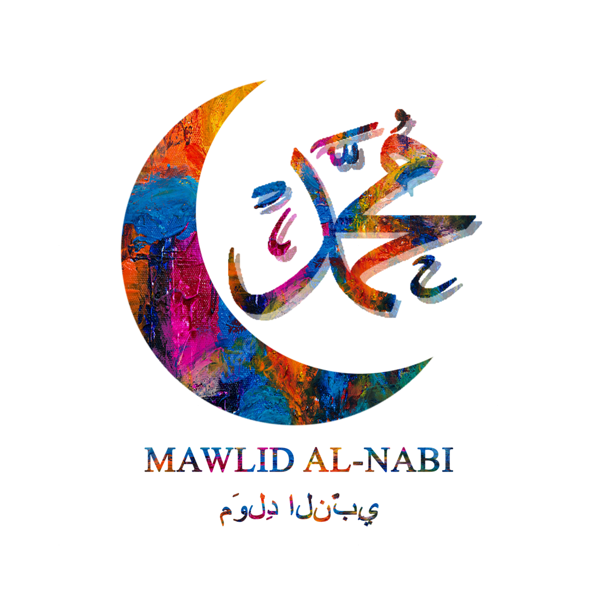
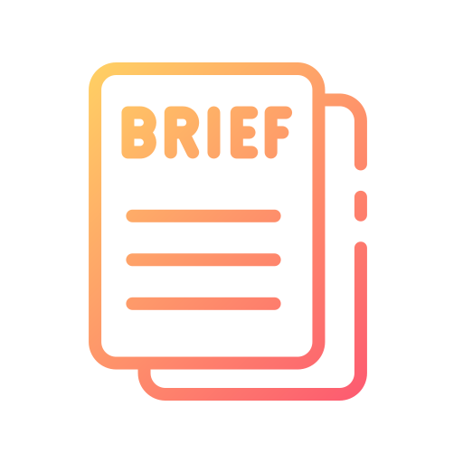
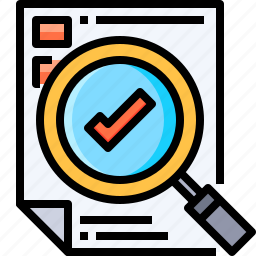
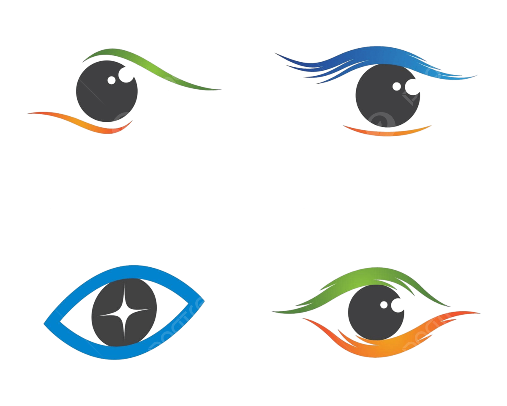

RAPAT HARIAN
rapat harian adalah Rapat harian adalah pertemuan rutin yang diadakan setiap hari oleh tim atau kelompok kerja untuk mendiskusikan perkembangan, hambatan, dan langkah-langkah yang perlu diambil dalam proyek atau tugas yang sedang dikerjakan. Biasanya, rapat harian memiliki tujuan untuk:
1. Menginformasikan perkembangan: Setiap anggota tim memberikan update singkat tentang apa yang telah mereka kerjakan sejak rapat terakhir.
2. Mengatasi hambatan: Diskusi mengenai masalah atau hambatan yang dihadapi dan mencari solusi bersama.
3. Menyelaraskan tujuan: Memastikan bahwa semua anggota tim memiliki pemahaman yang sama tentang prioritas dan tujuan jangka pendek.
4. Membagi tugas: Mendiskusikan tugas yang perlu dikerjakan dan mendistribusikannya kepada anggota tim yang sesuai.
Rapat harian biasanya singkat, sekitar 15-30 menit, untuk menjaga agar tetap efisien dan produktif.
PEMBACAAN MAULID NABI
Maulid Diba' atau Maulid Ad-Diba'i adalah sebuah bacaan pujian yang ditujukan kepada Nabi Muhammad SAW. Bacaan ini ditulis oleh Imam Wajihuddin Abdur Rahman bin Muhammad bin Umar bin Ali bin Yusuf bin Ahmad bin Umar ad-Diba'i asy-Syaibani al-Yamani az-Zabidi asy-Syafi'i.
Maulid ini berisi syair-syair yang menggambarkan kehidupan Nabi Muhammad SAW, dari kelahiran hingga dakwah beliau. Bacaan ini sering dibacakan pada acara Maulid Nabi Muhammad SAW untuk mengekspresikan rasa hormat dan penghormatan kepada Rasulullah1.
Pembacaan maulid ini biasa di lakukan sebelum kita melakukan rapat harian, dengan tujuan agar berangkatnya kita dari rumah tidak hanya untuk membahas sebuah acara, tetapi ada keseriusan tersendiri di dalam mensyiarkan islam
LAPORAN PERTANGGUNGJAWABAN
Laporan Pertanggungjawaban (LPJ) adalah dokumen yang disusun oleh seseorang atau suatu organisasi untuk melaporkan hasil pelaksanaan kegiatan atau program yang telah dijalankan. LPJ biasanya mencakup informasi tentang pelaksanaan, pencapaian, penggunaan anggaran, dan evaluasi dari kegiatan tersebut.
Tujuan utama dari laporan pertanggungjawaban adalah untuk memastikan transparansi, akuntabilitas, dan evaluasi dalam pelaksanaan suatu kegiatan atau program. Secara lebih rinci, tujuan-tujuan ini mencakup:
1. Transparansi: Memberikan informasi yang jelas dan terbuka tentang bagaimana kegiatan atau program dilaksanakan, termasuk penggunaan sumber daya dan anggaran.
2. Akuntabilitas: Mempertanggungjawabkan pelaksanaan kegiatan atau program kepada pihak yang berkepentingan, seperti pimpinan organisasi, sponsor, atau anggota tim.
3. Evaluasi: Mengidentifikasi keberhasilan dan kendala yang dihadapi selama pelaksanaan kegiatan, serta mencari solusi untuk perbaikan di masa mendatang.
4. Dokumentasi: Menyediakan catatan tertulis yang lengkap tentang pelaksanaan kegiatan, yang dapat digunakan sebagai referensi untuk kegiatan serupa di masa depan.
5. Pengambilan Keputusan: Memberikan informasi yang diperlukan untuk membuat keputusan yang lebih baik di masa mendatang, berdasarkan pengalaman dan hasil dari kegiatan yang telah dilaksanakan.
6. Penilaian Kinerja: Mengukur dan menilai kinerja individu atau tim dalam pelaksanaan kegiatan, untuk mengetahui apakah tujuan dan sasaran telah tercapai.
Laporan pertanggungjawaban merupakan alat penting untuk memastikan bahwa setiap kegiatan atau program dijalankan dengan baik dan sesuai dengan rencana yang telah ditetapkan.
BRIEFING
apa itu briefing Briefing adalah pertemuan singkat yang diadakan untuk memberikan instruksi, informasi, atau pengarahan kepada sekelompok orang sebelum melakukan suatu kegiatan atau tugas. Briefing biasanya dilakukan untuk memastikan bahwa semua anggota tim memiliki pemahaman yang sama mengenai apa yang perlu dilakukan, tujuan yang ingin dicapai, serta peran dan tanggung jawab masing-masing. Berikut adalah beberapa tujuan umum dari briefing:
1. Memberikan Arahan: Menginformasikan tentang tugas atau kegiatan yang akan dilakukan, serta langkah-langkah yang perlu diambil.
2. Menjelaskan Tujuan: Menjelaskan tujuan utama dari kegiatan atau tugas yang akan dilakukan.
3. Mengatasi Hambatan: Membahas potensi masalah atau hambatan yang mungkin dihadapi dan cara mengatasinya.
4. Menyelaraskan Tim: Memastikan bahwa semua anggota tim memiliki pemahaman yang sama dan bekerja menuju tujuan yang sama.
5. Meningkatkan Kesiapan: Meningkatkan kesiapan dan kepercayaan diri anggota tim sebelum melaksanakan tugas atau kegiatan.
Briefing dapat dilakukan secara lisan atau tertulis, tergantung pada kebutuhan dan situasi.
EVALUASI
Evaluasi adalah proses sistematis untuk menilai atau meninjau kinerja, kualitas, atau efektivitas suatu kegiatan, program, proyek, produk, atau individu. Tujuan utama dari evaluasi adalah untuk mengidentifikasi kekuatan dan kelemahan, serta menentukan langkah-langkah perbaikan yang diperlukan. Evaluasi dapat dilakukan secara kualitatif maupun kuantitatif, tergantung pada konteks dan tujuan evaluasi tersebut. Beberapa tujuan umum dari evaluasi adalah:
1. Menilai Kinerja: Mengukur sejauh mana tujuan atau sasaran telah tercapai.
2. Meningkatkan Kualitas: Mengidentifikasi area yang memerlukan perbaikan untuk meningkatkan kualitas kegiatan atau produk.
3. Mengambil Keputusan: Memberikan dasar informasi untuk pengambilan keputusan yang lebih baik di masa mendatang.
4. Meningkatkan Efektivitas: Menentukan apakah sumber daya digunakan secara efektif dan efisien.
5. Memberikan Umpan Balik: Memberikan masukan konstruktif kepada individu atau tim tentang kinerja mereka.
6. Evaluasi biasanya melibatkan pengumpulan data melalui berbagai metode seperti observasi, wawancara, kuesioner, dan analisis dokumen. Setelah data dikumpulkan, hasil evaluasi dianalisis dan disajikan dalam bentuk laporan yang dapat digunakan untuk perbaikan lebih lanjut.
CEK IN AKHIR

Cek in akhir sebelum acara adalah proses pengecekan terakhir yang dilakukan sebelum acara dimulai. Proses ini biasanya bertujuan untuk memastikan bahwa semua persiapan sudah selesai dan tidak ada hal yang terlewatkan. Beberapa hal yang biasanya diperiksa selama cek in akhir sebelum acara meliputi:
1. Pengecekan Peralatan: Memastikan bahwa semua peralatan yang dibutuhkan, seperti sound system, proyektor, mikrofon, dan lain-lain, berfungsi dengan baik.
2. Kesiapan Tempat: Memastikan bahwa tempat acara sudah siap, termasuk dekorasi, pengaturan kursi, dan kebersihan.
3. Pengecekan Dokumen: Memeriksa semua dokumen yang diperlukan, seperti daftar hadir, jadwal acara, dan materi presentasi, sudah tersedia dan lengkap.
4. Koordinasi Tim: Mengonfirmasi bahwa semua anggota tim penyelenggara sudah memahami tugas dan tanggung jawab mereka serta siap melaksanakan tugasnya.
5. Komunikasi dengan Pihak Terkait: Memastikan bahwa pihak-pihak terkait, seperti pembicara, tamu undangan, dan peserta, sudah diinformasikan dengan baik mengenai acara dan jadwalnya.
6. Pengecekan Logistik: Memastikan logistik acara, seperti konsumsi, transportasi, dan akomodasi, sudah siap dan sesuai rencana.
Pemantauan Keamanan: Memastikan aspek keamanan acara, termasuk tindakan pencegahan darurat, sudah dipersiapkan.
Cek in akhir ini sangat penting untuk memastikan bahwa acara dapat berjalan dengan lancar dan sesuai rencana
VISITASI
visitasi adalah Visitasi adalah kegiatan kunjungan yang dilakukan oleh pihak tertentu, seperti institusi, organisasi, atau tim evaluasi, ke suatu tempat atau lembaga dengan tujuan melakukan penilaian, evaluasi, pengawasan, atau verifikasi terhadap pelaksanaan program, kegiatan, atau kebijakan yang ada. Visitasi sering dilakukan dalam konteks pendidikan, kesehatan, perusahaan, atau lembaga pemerintah. Beberapa tujuan umum dari visitasi meliputi:
1. Evaluasi Kinerja: Menilai kinerja suatu lembaga atau program untuk memastikan bahwa tujuan dan sasaran telah tercapai.
2. Pengawasan dan Kontrol: Memastikan bahwa kegiatan atau program berjalan sesuai dengan peraturan dan standar yang telah ditetapkan.
3. Verifikasi Data: Memverifikasi keabsahan dan akurasi data atau laporan yang disampaikan oleh lembaga yang dikunjungi.
4. Penjaminan Kualitas: Memastikan bahwa kualitas layanan atau kegiatan yang diberikan oleh lembaga sesuai dengan standar yang berlaku.
5. Rekomendasi Perbaikan: Memberikan masukan dan rekomendasi untuk perbaikan atau peningkatan kinerja lembaga atau program.
Visitasi biasanya melibatkan kegiatan seperti observasi, wawancara, diskusi dengan pihak terkait, dan pemeriksaan dokumen. Hasil dari visitasi biasanya disusun dalam bentuk laporan yang akan digunakan sebagai dasar pengambilan keputusan atau tindakan perbaikan.